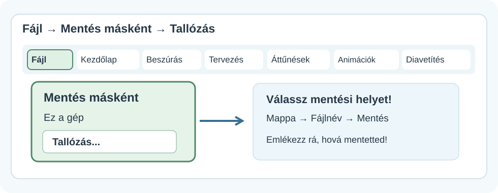
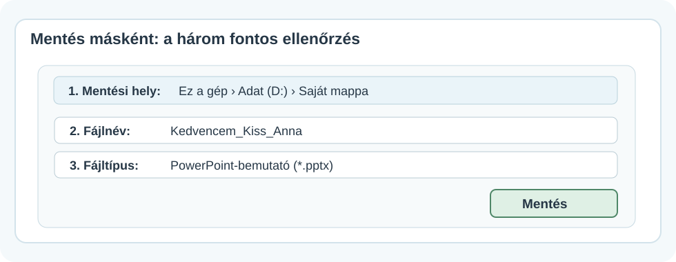
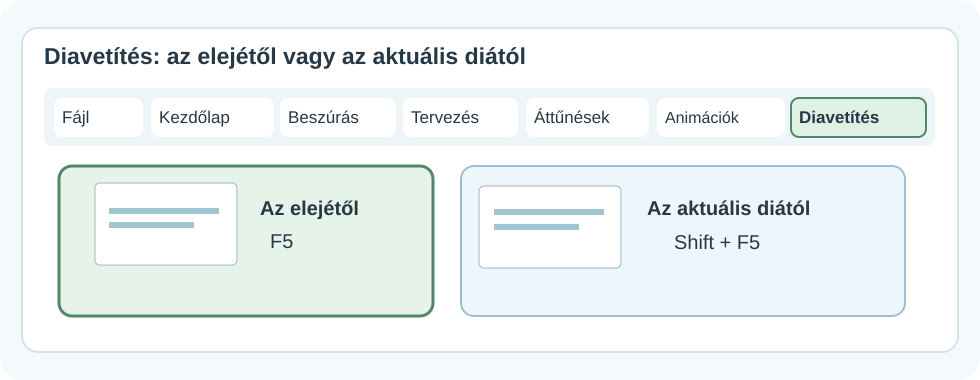
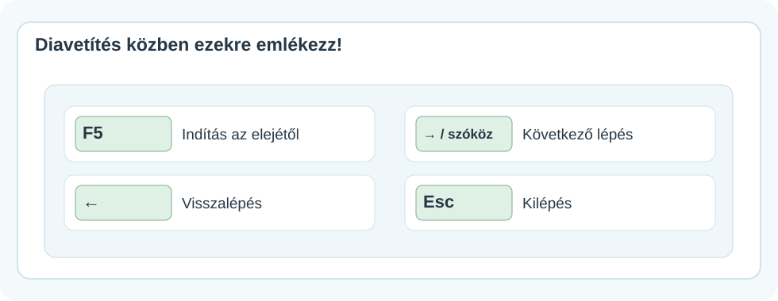

💾 Mentés, diavetítés és fájlbeadás
Kész a bemutatód? Tedd biztonságba és próbáld ki!
Akkor vagy kész, ha a fájlt meg is találod, diavetítésben végignézted, és a megfelelő munkát tudod beadni.
Hogyan használd az ábrákat?
A képek egyszerűsített szemléltető menütérképek, nem pontos képernyőfotók. A gombok helye a telepített PowerPoint változatától és az ablak méretétől kicsit eltérhet. Kattints a képekre a nagyobb nézethez!
1. Ne veszítsd el a munkádat – mentsd el!
Az első mentésnél három dolgot érdemes tudatosan megadnod: a mappát, a fájlnevet és a fájltípust.


Ne csak a fájlnévre figyelj!
Hiába nevezed el jól a bemutatót, ha utána nem találod meg. Mentés előtt nézd meg a mappa útvonalát is! A képen látható meghajtó és név csak példa.
2. Munka közben is ments!
Ha a bemutatód már megkapta a helyét és a nevét, a Ctrl+S billentyűkombinációval rendszeresen mentheted a módosításaidat.
- Ments egy-egy hosszabb munkarész után!
- Ha más néven vagy másik mappába szeretnél egy új példányt, használd a Mentés másként lehetőséget!
- A .pptx szerkeszthető bemutató. A .pdf más célra való: általában nem használható a diák és animációk PowerPoint-szerkesztésére.
3. Próbáld ki diavetítésben!
A szerkesztőnézetben látod a menüket és a diák kicsinyített képeit. A diavetítés viszont megmutatja, mit lát majd a közönség.

- F5: a bemutató indítása az első diától.
- Shift+F5: indítás a jelenleg kijelölt diától.
Az F5 és a fényerőgomb
Egyes laptopokon az F5 funkcióhoz az Fn billentyűt is le kell nyomni. Ha nem indul, használd a Diavetítés menüt!
4. Így vezéreld vetítés közben

| Mit szeretnél? | Billentyű |
|---|---|
| Vetítés indítása az elejétől | F5 |
| Indítás az aktuális diától | Shift+F5 |
| Következő lépés vagy dia | →, szóköz |
| Előző lépés vagy dia | ← |
| Visszatérés a szerkesztéshez | Esc |
Miért nem lépett rögtön a következő diára?
Ha az aktuális dián animációk vannak, egy kattintás vagy billentyűnyomás először a következő animációt indíthatja el. Csak utána következik a következő dia. Erről az Animációk és áttűnések útmutatóban olvashatsz.
5. Ellenőrizd az egészet, mielőtt beadod!
Vetítés közben nézd meg:
- A diák helyes sorrendben következnek-e.
- A képek és szövegek nem lógnak-e le és nem takarják-e egymást.
- A címek és feliratok távolabbról is olvashatók-e.
- Az animációk és áttűnések érthető sorrendben jelennek-e meg.
- Találsz-e elírást vagy hibásan elhelyezett elemet.
6. Moodle-beadás: a megfelelő fájlt töltsd fel!
Ha a feladatban a tanárod PowerPoint-bemutatót (.pptx) kér, ezt a fájlt keresd meg és töltsd fel a Moodle-feladatba!
Nem minden fájl ugyanaz
- A .pptx a szerkeszthető PowerPoint-bemutató.
- A .pdf megjelenítésre alkalmas, de az animációk és szerkeszthető elemek nem úgy működnek benne.
- Egy megosztási link nem helyettesíti a fájlfeltöltést, ha a feladat kifejezetten fájlt kér.
Mindig a feladat pontos beadási feltételeit kövesd!